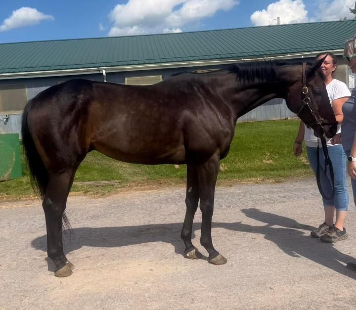
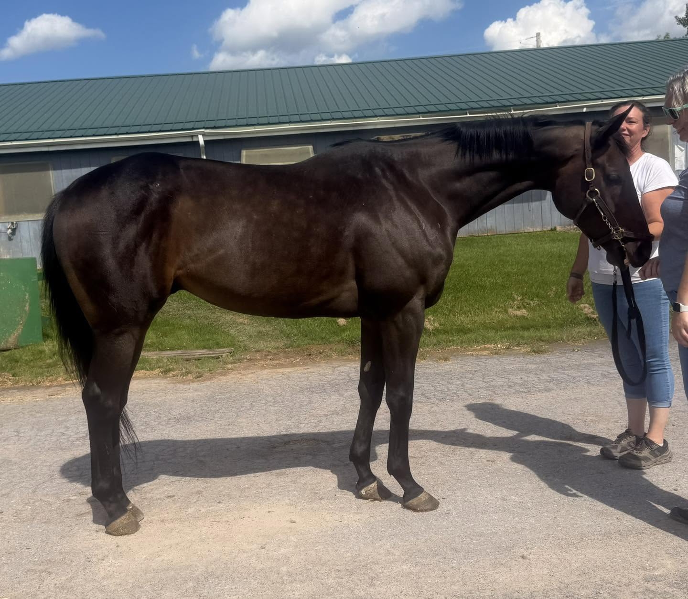
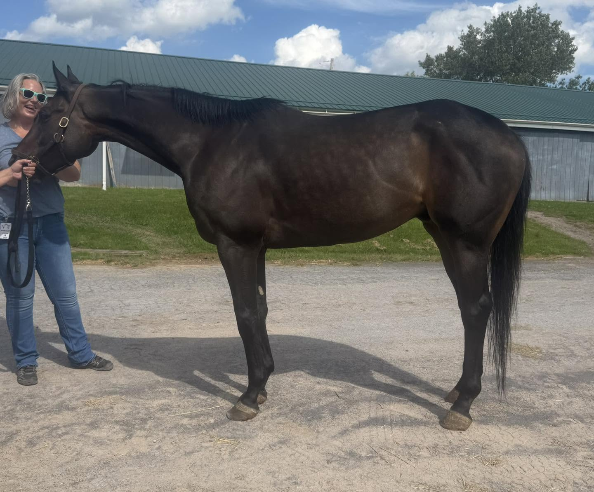
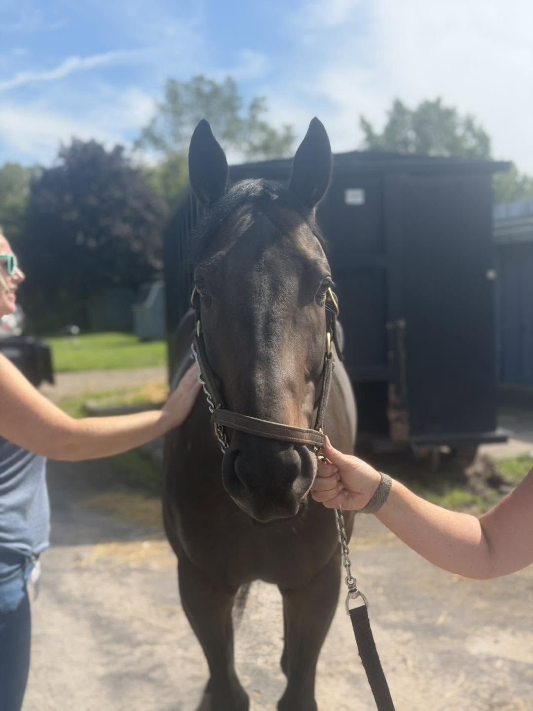
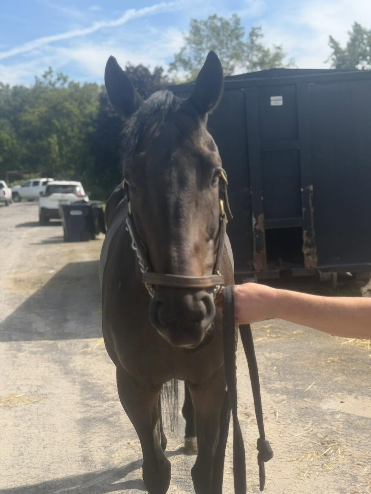
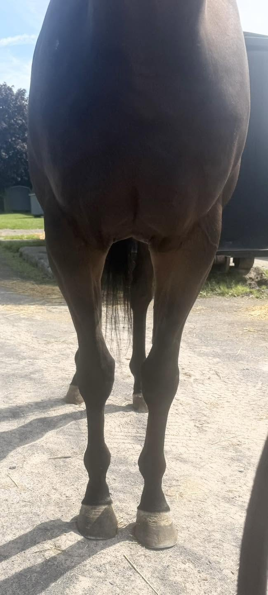
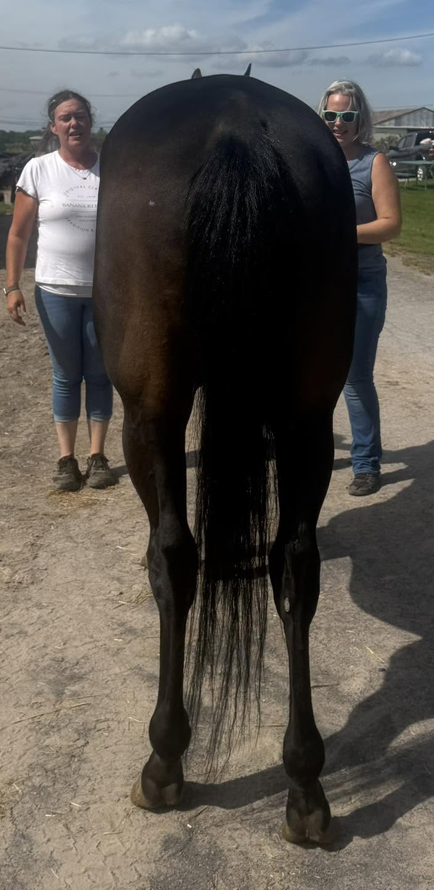
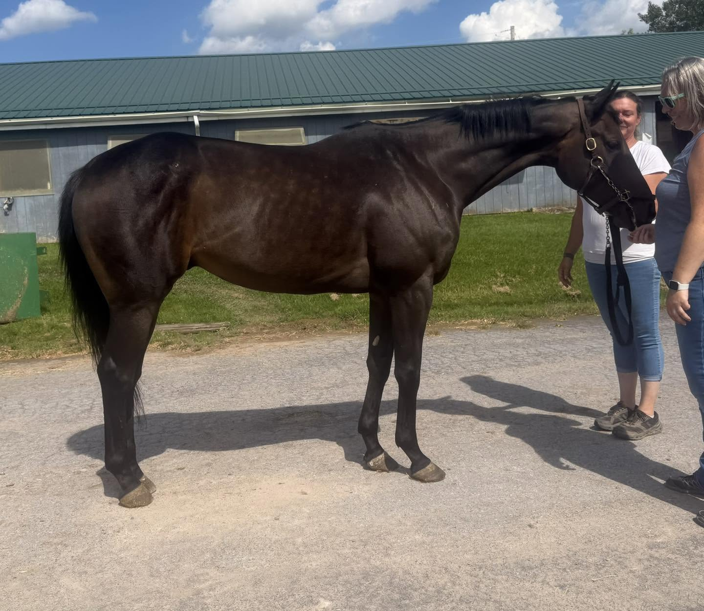
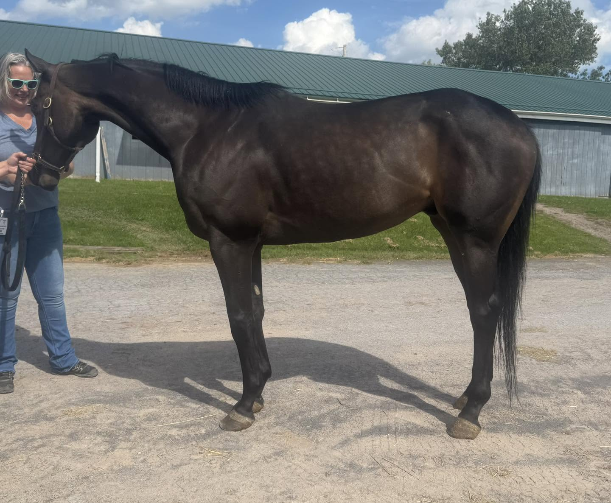

CLASSICAL, 2020, 16.0h dark bay gelding
Located at the Finger Lakes Race Track in Farmington, NY (near Rochester, NY).
This handsome, well- travelled son of Uncle Mo, a $175K yearling, affectionately called “Chewey”, has raced at tracks all over the country- KY, CA, and NY. So it was no surprise to us to learn that he loads and ships really well. We heard that he is game for anything- his connections have even played around with free jumping him when he’s been wintered on the farm. He’s described as a giant goof and even bigger attention seeking hound who craves to be in the spotlight 24/7! His connections fondly tell us “he is like Dennis the Menace in a horse body- always wanting to be in your business” and though he will mischievously push boundaries, he’s also not upset when called out on it (oops! My bad). He’s said to be great in his stall… unless you are giving attention to a stablemate that he thinks should be his! But once he’s tacked up, he is all business. We were told he’s good to ride and that out on the track, you can stop him and stand on a loose rein as he’s perfectly happy to watch the other horse’s workouts.
Last year, after losing a photo finish, it was discovered that he had fracture his RF sesamoid. Fortunately, it did not involve the suspensory and has been properly and carefully rehabbed. This year, after evaluating all the factors, his connections have decided to retire him. The vet has cleared him to start training for new career options and said that he should be suitable for dressage, flatwork, trail, or as a lower level hunter / jumper. Which leave you many options! Note: his connections are happy to share his x-rays and history to seriously interested parties. They are looking for the “perfect home” for a much-loved boy and will carefully screen candidates.
He was eager to move out to show off his jog to strut his stuff- polite but happily expressive. In his video, he is barefoot on the pavement. We were told that a quirk is that although his front shoes are never an issue, he is a Houdini with throwing off his hind ones. And he can also be a tad anxious about the farrier handling his hind feet. But he has also always trained well without his hind shoes.
Off the track, he is friendly and playful with other horses in turn-out but never buddy sour. Instead, he really bonds to people and will leave the herd and run to the gate should a person arrive. This guy was Mr. Personality Plus. He will keep you laughing at his antics every day. And should you ever need help zipping and unzipping your jacket, he’s your guy!
Classical is by Uncle Mo and out of a First Defense mare with Unbridled and Blushing Groom also appearing in his pedigree. His second dam, Flute, is a Kentucky Oaks Winner.
Please note that references will be required and checked prior to being able to purchase this horse. Please see our post pinned to the top of our FB page for more information.
Contact: Yvonne Fay (585) 301-7190
Price: $2,500, neg.
A PPE is always recommended. For information about vet practices available to do PPEs, and other important information about the buying process, please see the How to Buy page.







